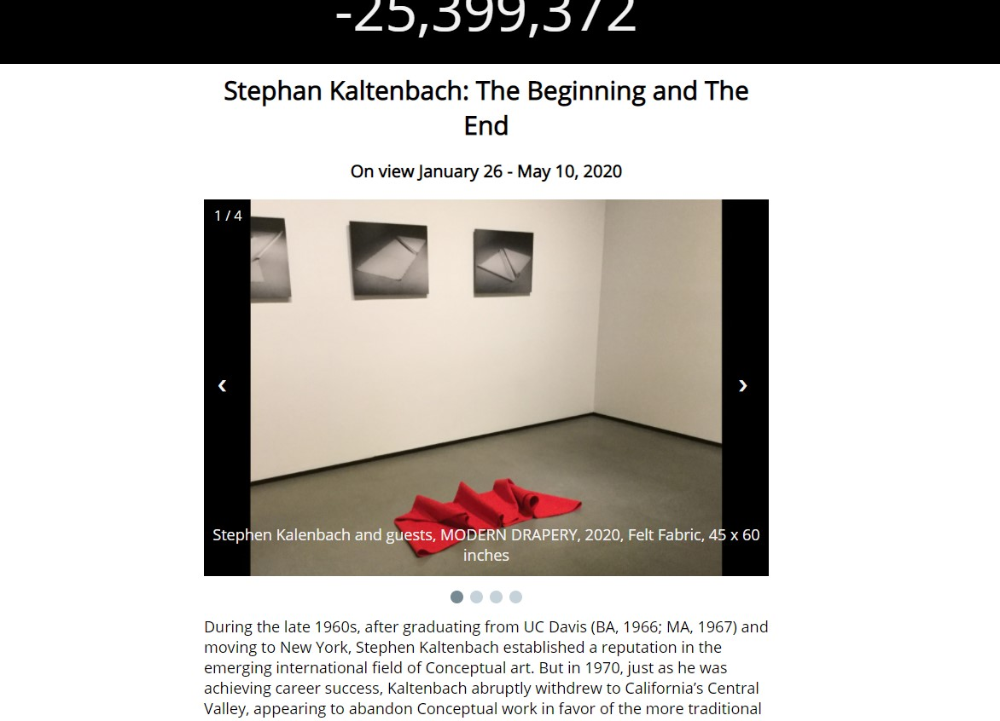
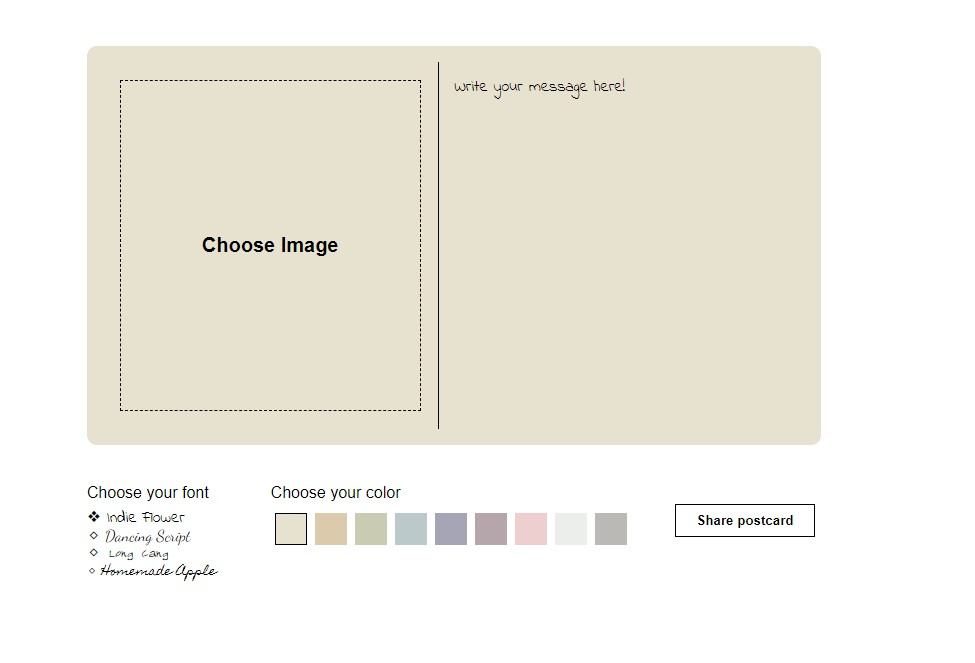
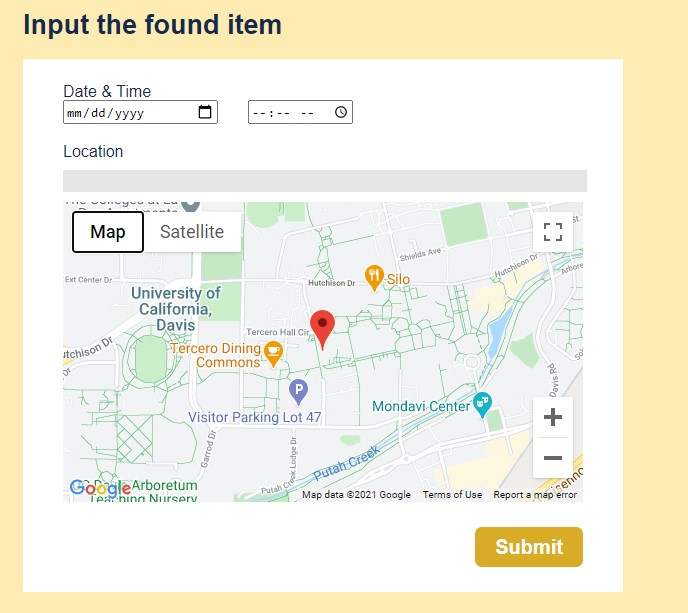
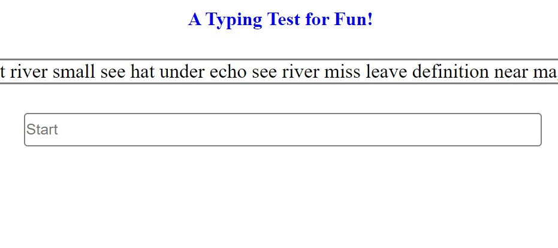
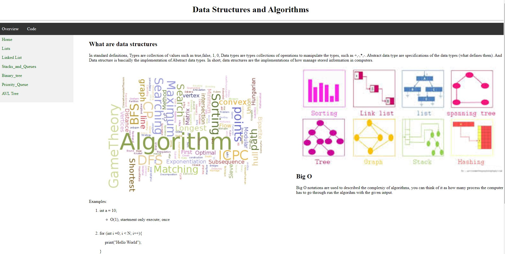

Museusm Exhibition

Responsive web page for showcasing pictures, implemented with css flexboxes. Web page scales differently based on PC, Tablet, and Phone.
Postcard Sharer

Postcard creator website that stores pictures using SQL databases, using Node.js (express) servers to transmit JSON data to the client. Allows users to upload images and choose multiple fonts/colors and share them as a postcard with their friends.
Lost and Found UCD

Lost and Found website for UC Davis, used SQL databases to store lost and found items, incorporated Google Map API to let users to accurately input locations of the lost/found items.
Typing Test

Web-based typing game using Javascript to record users’ keyboard inputs and gives the users their WPM(word per minute).
Data Stcutures and Algoirthm Wiki

A simple website for learning basic Learning Data Structures and Algorithms, used css and html to create navigation bars and created good formatted websites
❮
❯